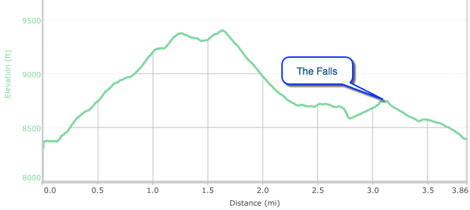

Hyde Park Circle Trail



- Jul 16, 2015: On that long hill up
- Jul 16, 2015: A lookout point en route
- Jul 16, 2015: View of the Sangre de Cristos from the high point
- Jul 16, 2015: The side trip to the falls is worth the effort!
- https://www.flickr.com/photos/139088815@N08/27727210680/in/photostream/
- https://www.flickr.com/photos/139088815@N08/28007326425/in/photostream/
- https://www.flickr.com/photos/139088815@N08/28007301335/in/photostream/
- https://www.flickr.com/photos/139088815@N08/27929528561/in/photostream/
Hyde Park Circle is a loop trail which starts in Hyde Park State Park, about 7 miles from Santa Fe. The trail is somewhat steep but provides nice vistas from the high point, after which it descends rapidly back down to Hyde Park Road. After crossing the road, a side trip can be made to the falls which is well worth the effort! The hike is aptly described in Day Hikes In The Santa Fe Area by the Northern New Mexico Group of the Sierra Club, and in the Santa Fe-Taos Hiking Guide by Bob D'Antonio. Online sites provide more insight, including Explore NM. Beautiful in summer months, it may be too steep for winter snow hikes.